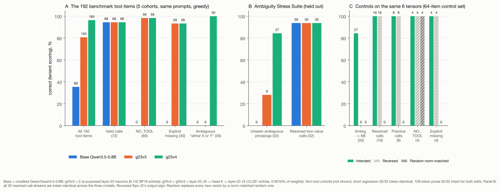
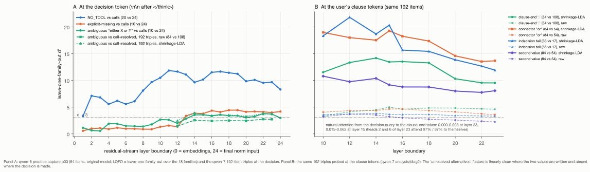
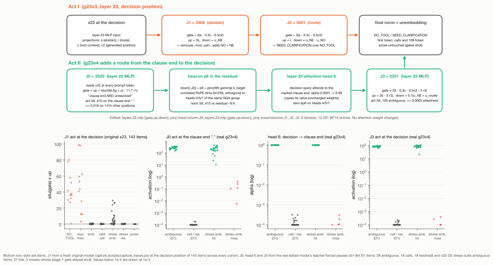
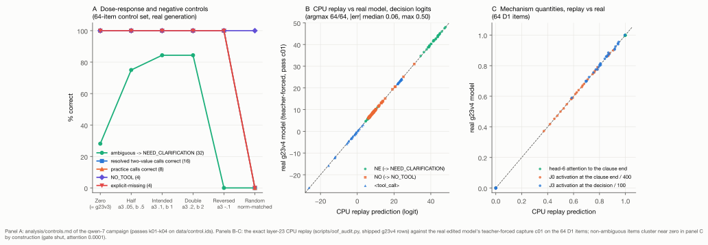

Weight-space programming · Qwen3.5-0.8B · research agent Mythos 5.1
Programming Four Dead Neurons: Repairing Tool Calling and Routing Stranded Information in Qwen3.5-0.8B Without Training
How Mythos 5.1 diagnosed a missing inhibition and a positional attention bottleneck in Qwen3.5-0.8B — and hand-wired a 4-neuron, 2-layer circuit (0.0016% of weights) on an M4 Pro MacBook.
- Base model35.4%68 of 192 benchmark tool items · calls on everything
- g23v3 · 2 neurons80.7%155 of 192 · NO_TOOL and explicit-missing repaired, 0/30 ambiguous
- g23v4 · 4 neurons96.4%185 of 192 · +117 wrong→right, 0 right→wrong, 30/30 ambiguous
- Unseen phrasings0→9→27of 32 stress-suite ambiguous items; all 32 resolved calls token-identical
1. Introduction and headline results
There are two ways to change what a language model does by editing its weights. The first is unconditional global steering: find a direction in the residual stream that correlates with a behaviour, and add or remove it everywhere (the "abliteration" family does this with refusal). It is cheap and it works, in the sense that the behaviour moves; it also moves on every prompt, because nothing in the edit asks whether the behaviour was appropriate. The second is conditional circuit construction: find the evidence the model already computes, find a place where it is read, and wire a small piece of logic that fires only when that evidence is present. The second is harder, because the evidence has to be where you need it, and because the model does not come with a bias term you can set.
This post is the story of doing the second thing twice on the same model, with the same constraints: no gradients, no optimizer, no LoRA, no fitting to target outputs; only closed-form linear algebra on activations captured from a budget of forward passes, and a hard cap of 0.05% of the weights, eight tensors, three layers. The model is Qwen/Qwen3.5-0.8B (24 layers, width 1,024, SwiGLU MLPs of width 3,584, six full-attention layers among eighteen linear-attention layers, tied unembedding), run in BF16 with greedy decoding on a laptop.
The task is semantic tool calling under a fixed system prompt: call the tool when a request needs it; reply exactly NO_TOOL when it does not; reply exactly NEED_CLARIFICATION when a required value is missing or ambiguous. The base model is trigger-happy: on 192 benchmark items spanning five cohorts (practice, held-out selection families, two renamed-identifier sets, a final-split proxy) it gets 68 right. It makes every required call (68/72) and almost nothing else: 0/60 explanation requests, 0/30 explicitly-missing values, 0/30 unresolved two-value requests (either "X" or "Y", with no preference specified) — it just calls, picking one value.

Two edits, built in two campaigns:
- g23v3 (Act I) re-purposes two near-dead neurons of the last MLP layer into a gated readout. It takes the 192 items from 35.4% to 80.7% (68 → 155), repairs 59/60 explanation requests and 28/30 explicit-missing requests, keeps all 72 required calls token-identical, and leaves 128-token prose intact. 6,142 BF16 entries, three tensors, one layer. It repairs 0/30 of the ambiguous "either X or Y" requests.
- g23v4 (Act II) keeps g23v3 bit-for-bit and adds a second stage: one near-dead neuron in layer 22 that detects an unresolved alternative at the user's clause end and writes a beacon into the residual stream; one unchanged attention head in layer 23 that carries the beacon to the decision token; one more near-dead layer-23 neuron that reads it. It takes the 192 items to 96.4% (185): +117 items wrong→right against the base model, 0 right→wrong, 100% on the selection and final-split families, 30/30 on the ambiguous items, with every other stream token-identical to g23v3. On a 64-item Ambiguity Stress Suite built after the circuit was designed (new families, renamed tools, six phrasings never captured), it goes 0/32 (base) and 9/32 (g23v3) to 27/32, while all 32 contrastive resolved two-value calls ("use X rather than Y") stay token-identical. 12,281 BF16 entries in total — 0.0016% of the weights, six tensors, two layers, four neurons.
The same closed-form CPU simulator that designed each edit predicted the real edited model's decision token on 64/64 calibration items (median logit error 0.06), and predicted the direction of every dose and random control before it was run. The rest of this post is how the two circuits were found, why the first one could not solve the ambiguity problem, where the missing information turned out to live, and the three small mathematical tricks that let a second stage reach it without touching a single attention weight.
2. Act I (g23v3): a missing inhibition and the two-neuron layer-23 SwiGLU gate
2.1 Direct logit attribution finds no culprit
The natural first hypothesis for a model that calls tools when it should not is that some component pushes for <tool_call> on the wrong prompts. Direct logit attribution of every MLP neuron in the model — 24 layers × 3,584 = 86,016 neurons — to the <tool_call>-minus-NO logit margin at the decision position (the \n\n after the empty </think> block) found nothing of the kind. The call push is distributed and class-independent: layers 14–23 write it (layer 20's block alone adds 5–6 logits), and explanation requests receive almost the same push as genuine calls. No neuron is selective for the mistake. The failure is a missing inhibition, not a spurious excitation: the model has not learned to stop.
2.2 The evidence exists, and it is still present at the last layer
Teacher-forced captures of the residual stream at the decision position showed that the information the model fails to use is there. An "explanation request" direction (difference of class means, fit on a separate teacher set) separates NO_TOOL items from calls with leave-one-family-out d′ ≈ 10–12 across layers 10–18 (Figure 2A, blue), with zero overlapping practice items, and it is still linearly present in the residual entering layer 23. The clarify-vs-explain distinction (whether to say NEED_CLARIFICATION rather than NO_TOOL) is clean at layers 8–13 and still readable at the layer-23 MLP input, though the model's own output never uses it: NE trails NO by about two logits for both classes. "Required value explicitly missing" is separable but entangled with the explanation feature (d′ ≈ 4 against calls on its own). And the ambiguous "either X or Y" items looked, at the decision position, exactly like complete calls — more on that in §3.
2.3 Why the last layer, and why SwiGLU is an AND gate
Where should the inhibition be written? The residual RMS grows from 0.07 at layer 14 to 0.38 at layer 24. A mid-layer write large enough to move the output by ~15 logits would exceed the local residual norm and be reprocessed by nine more layers, and it would pollute every later position through the KV cache. A layer-23 MLP write is scaled exactly once by the final RMSNorm, and because the attention keys and values of layer 23 are built from the layer's input, a change to the MLP's output affects the logits at its own position only. So the readout goes into the last MLP.
A SwiGLU neuron computes silu(gate·x) · (up·x) and writes down times that scalar. The product is bilinear: the neuron fires only when both projections are large. That makes a single neuron a three-way AND gate if you let the gate read a conjunction. Two neurons that are near-dead everywhere (max |activation| ≤ 0.25 at every captured position) were re-purposed: J1 = 3468 and J2 = 3421. With x the layer-23 MLP input, s the abstain feature, r the clarify-vs-explain feature, c a tool-context feature and c₂ a generated-position feature:
gate[J1] = gate[J2] = k·(s − λ·c − λ₂·c₂) k = 2, λ = 0.3, λ₂ = 0.5
up[J1] = k·s down[:,J1] = u_AB (removes <tool_call>; raises NO and NE; keeps I / To / The down)
up[J2] = k_r·r down[:,J2] = u_NE − u_NO (NEED_CLARIFICATION over NO_TOOL)
u_AB is a minimum-norm least-squares readout direction: the vector whose logit contribution through the final RMSNorm and the tied unembedding is −1 on <tool_call>, +1 on NO and NE, −0.5 on the prose starters I, To, The (v1 had 0 there) and 0 on 39 other competitor tokens. J1 abstains; J2 routes.
2.4 v1 → v2 → g23v3: what collapsing prose taught us
The first candidate, v1, had no gate terms: gate = k·s. It repaired the benchmark and destroyed free-form writing. Asked a plain question without tools, the model's 128-token essay turned into NONENENENE…: the abstain feature is weakly present at many positions of ordinary text, the bilinear product is quadratic in it, and once NO is emitted the feature grows. v2 added the tool-context gate c (λ = 0.3), a direction that is high only when a <tools> declaration is in the context; prose outside tool contexts was safe again, but inside tool contexts the neuron could still fire at later generated positions. g23v3 added the generated-position gate c₂ (λ₂ = 0.5), which is large at every position after the decision token, so the gate is open only at the one position where the decision is made. The closed-form simulator — layer-23 MLP + final norm + unembedding on captured inputs — predicted each step before it was generated, including the collapse of v1 and its disappearance under c₂.
The result: 59/60 NO_TOOL, 28/30 explicit-missing, 68/72 calls token-identical, 32/32 regression answers token-identical, 32/32 essays intact; reversed-sign and norm-matched random controls on the same two neurons do nothing useful or break calls. And 0/30 on ambiguity.
3. The wall: 0/30 on "either X or Y", and where the missing information hides
Why did a readout that repairs "explain, do not run" fail on "either cedar_488 or birch_690, no preference"? Because at the decision position the ambiguous items look like complete calls. Leave-one-family-out probes against calls at the \n\n token never exceeded d′ ≈ 3 in any of the 25 layer boundaries (Figure 2A, green), and no linear readout of that position — raw, with the family subspace projected out, or with shrinkage LDA — got past d′ ≈ 3.9, always with negative margins (the campaign called this Hypothesis A, within-pair subspace masking: refuted as a sufficient mechanism). A third layer-23 neuron reading the decision position could not reach zero regressions.

So the second campaign probed other positions. Matched triples were built for each tool family — (i) a complete single-value call, (ii) a resolved two-value call that mentions both values but settles the choice ("use X rather than Y", "previously Y, but today use X", "X instead of Y"), (iii) an unresolved ambiguous request — with six derivation phrasings, renamed twins, and held-out phrasings on held-out families: 192 items, three teacher-forced passes. The contrast between (ii) and (iii) is the point: a circuit that fires on "two values are mentioned" would be wrong half the time.
At the user's clause tokens the picture flips (Figure 2B). At the clause-end period, shrinkage-LDA separates unresolved from {call, resolved} with d′ 9.5–14.2 and perfect accuracy; at the connector "or" and the indecision tail, d′ 13–22. The representation of "unresolved alternatives" is strong, linear and present from layer 10 on — where the two values are written. It is simply never routed to where the decision is made: the attention mass from the decision query onto the clause-end token is 0.000–0.003 at layer 23 (heads 2 and 6 attend 97% and 87% to themselves), ≤ 0.008 at layer 19, and at most 0.062 at layer 15. This is the positional bottleneck (Hypothesis B, supported): the feature exists but sits stranded in the prompt. No single head's output at the decision carries it (d′ ≤ 2.3 for every head of every full-attention layer; Hypothesis C, no), and transport through the existing layer-15 heads was rejected on arithmetic — gain 0.6, attention 0.06, residual RMS 0.09 at the clause end gives about 0.2 units delivered per unit written, while a usable feature at layer 23 needs a write of about 3 that would then be reprocessed by eight layers.
The question became: can a weight edit move a feature from one position to another?
4. Act II (g23v4): hijacking an attention head across layers
The answer is a two-stage circuit — J0 → head 6 → J3 — that leaves every attention weight untouched. It uses the fact that attention is a content-addressed read: a head reads from whichever position has a key aligned with its query. If an upstream neuron writes, at the clause end, a residual vector whose layer-23 key is aligned with head 6's decision query, head 6 will attend there and copy that position's value to the decision, whether or not it was ever trained to. Three constructions made this work.

4.1 Conjunction gating: "clause end AND unresolved"
Stage 1 is J0 = 2525, the quietest neuron of the layer-22 MLP (max |activation| 0.205 over 116k prompt positions). It reads the layer-22 MLP input x₂₂ at every prompt token. The unresolved direction u (shrinkage-LDA, ambiguous clause end vs call/resolved clause end; leave-one-family-out d′ 10) on its own is not safe: it also lights up on the system prompt's own words ("missing or ambiguous", "reply exactly NO_TOOL.") and inside resolved clauses before the resolution arrives (up to 9.6 on the w₁ scale, against 13.7–16.6 on true ambiguous ends). A second direction g — "end of a user fact clause" vs every other position (d′ 9–19 at the ends) — turns the gate into a conjunction: w₁ = unit(0.5·g + u). On the ambiguous clause ends w₁·x is 13.7–16.6; on 141,000 other positions (every prompt and generated token of call, resolved and NO_TOOL items, prose, short answers) it is at most 9.8. That is what keeps the resolved two-value calls — "use X rather than Y" — from ever triggering: 32/32 of them are token-identical to g23v3 and the base model.
4.2 A threshold without a bias: the constant-projection direction
A gap between 9.8 and 13.7 is only useful if the neuron fires above 11.7 and not below. SwiGLU neurons have no bias term. The trick is to find a direction r₁ whose projection is as nearly constant as possible on the critical positions — the ambiguous clause ends and the 3,000 hardest negatives — and subtract it:
r₁ = C⁻¹μ / (μᵀC⁻¹μ) (μ, C: mean and shrunk covariance of x₂₂ over the critical positions)
gate[J0] = up[J0] = k₁·(w₁ − θ₁·r₁) k₁ = 4, θ₁ = 11.7
Because r₁·x ∈ [0.99, 1.03] on those positions, (w₁ − θ₁r₁)·x ≈ w₁·x − θ₁: a synthetic bias of −11.7 realised purely in the weight row. With gate = up the activation is silu(k₁z)·k₁z, quadratic in the margin: pre-activations of 1.9–5.1 on ambiguous ends become activations of 58–410; the hardest negative (−2.1) becomes ≤ 0.016. The real edited model's teacher-forced pass later measured J0 at 149–360 on the ambiguous clause ends of the derivation set and ≤ 0.0002 on the call and resolved ends.
4.3 The key beacon in the unrotated RoPE dimensions
What should J0 write? Its down-projection column p₆ is built from the head you want to capture. Qwen3.5's full-attention layers use partial rotary embeddings: of each 256-dimensional head, the first 64 dimensions are rotated by position, the remaining 192 are not. Take the mean decision query of layer-23 head 6 on its unrotated dimensions 64:256 (scaled by the key norm's gain), orthogonalise it against the mean decision queries of heads 4, 5 and 7 — the three heads that share head 6's key/value group under grouped-query attention — and pull it back through the pseudo-inverse of the key projection composed with the layer-23 input norm:
k_target = γ_k ⊙ mean(q₆ at the decision)[64:256], ⊥ to q₄, q₅, q₇
p₆ = unit( pinv(W_k,kv1 ⊙ γ_in,23) · k_target )
down[:,J0] = p₆
Written with norm 58–410 into a residual whose norm at the clause end is about 9.6, the beacon dominates that position's layer-23 key, and because it lives in the unrotated dimensions the match does not depend on the distance between the clause end and the decision. Head 6's attention-logit on the marked position caps at 30 against a natural maximum of 17.7, so its attention from the decision query goes from 0.0001 to 0.992–0.999 (replay) and 0.995–0.999 (real model), with no spill onto heads 4/5/7 (≤ 0.0005 at the shipped dose on the 62 ambiguous items of the explorer bundle). The only consumer of a prompt position's layer-23 input is layer-23 attention, so nothing else in the network sees the marker.
4.4 Stage 2: reading the delivered value
Head 6 copies the marked position's value to the decision. The change this produces in the layer-23 MLP input x₂₃ — norm 11.9, cosine 0.99 to its mean across all 84 captured ambiguous items — defines a direction t. J3 = 2331, the quietest remaining layer-23 neuron, reads it under the same gates as Act I and the same bias trick:
gate[J3] = k₃·(t − λ·c − λ₂·c₂ − θ₃·r₃) up[J3] = k₃·(t − θ₃·r₃) down[:,J3] = a₃·(u_AB + ρ·u_route)
k₃ = 2, θ₃ = 2, λ = 0.3, λ₂ = 0.5, a₃ = 0.1, ρ = 1
t·x₂₃ is 5.5–7.0 when the marker is delivered, ≤ −4.1 at every natural tool-context decision, ≤ −2.3 at non-tool first tokens and ≤ 3.6 at prose positions, where c₂ closes the gate exactly as in g23v3. J3 fires at 59–109 on ambiguous items and ≤ 0.0003 everywhere else, and writes the same abstain-plus-route payload Act I uses, so the first token becomes NE → NEED_CLARIFICATION. J1 and J2 are untouched: the layer-23 rows of g23v3 are bit-identical inside g23v4.
Six tensors change: the gate, up and down projections of the layer-22 and layer-23 MLPs; 1,024 + 1,024 + 1,023 entries for J0, 3,069 + 3,070 + 3,071 for J1, J2 and J3 together — 12,281 BF16 values, 1.6 × 10⁻⁵ of the 752 million text parameters.
5. Predictive simulation, negative controls, and limitations
5.1 The simulator said so first
Every number in §4 was computed before the edited model was ever run. An exact CPU replay of layer 23 (the stock MLX modules, fed the captured layer-23 input sequences with J0's write added at every prompt position) predicted that 84/84 captured ambiguous items would emit NE with a margin of at least 11.6 logits over the runner-up, that 108/108 call and resolved items would keep the g23v3 argmax with at most 0.125 logit of change on their top-20 tokens, and that J0's largest write at any generated position would be 0.016. The real model's teacher-forced calibration pass agreed on 64/64 decision tokens with a median absolute logit error of 0.06 (max 0.50), and matched the mechanism quantities point for point (Figure 4B–C: attention, J0, J3). The replay's predictions for the controls were written into the notebook before the control passes were read.

5.2 Controls on the same support
Half dose (a₃ = 0.05, b = 0.5) keeps the transport but weakens the readout: 24/32. Double dose is token-identical to the intended edit on all 64 items — a larger write cannot open a shut stage-1 gate and breaks nothing. Reversing J3's output sign gives 0/32 and loses the nine stress items g23v3 had repaired (12 of them become NO_TOOL). And norm-matched random vectors on the same six tensors — the same four neurons, the same norms, g23v3's rows kept — are catastrophic: 4/64, 0/16 resolved calls, 0/8 practice calls, 37 items right→wrong against g23v3. The random stage-1 gate fires at arbitrary prompt positions (replay maximum activation 521) and writes random markers that every later attention head reads. A perturbation of this size is destructive unless it is the structured one.
5.3 Out-of-fold honesty
The shipped directions were fit on all 192 captured triple items and tested on the 64-item stress suite. A stricter check refits every fitted object — u, g, r₁, the beacon p₆, the delivered direction t and the layer-23 bias r₃ — on the 128 discovery and renamed-twin items only, sets θ₁ = 9.6 midway in the resulting transfer gap, keeps the shipped gains, and replays the held-out 64 selection/final items (28 ambiguous, 18 calls, 18 resolved) and the 64 stress items once. Result: direction level, 28/28 held-out ambiguous clause ends above threshold and every position of every held-out call and resolved item below it (margin +0.18); end to end, 27/28 ambiguous → NEED_CLARIFICATION and 36/36 calls and resolved items unchanged (the one miss has a pre-activation of 0.43, too small a write to capture head 6), and on the stress suite 28/32 with 32/32 resolved items unchanged. So the out-of-fold picture is the in-fold one with a thinner margin, not a different one. (The tables are in the repository's README and experiments/qwen7_g23v4/analysis/oof_audit.md.)
5.4 What it cannot do
The stress-suite misses have a shape: four of the five are "torn between X and Y" (1/5 of that phrasing), the fifth a renamed "could be X, could be Y". These phrasings have no disjunction and no explicit indecision tail; the model's clause-end representation of them lies closer to the threshold than the 1.9 margin of the captured phrasings, the gate stays shut, and the model falls back to exactly what the base model does — it calls. The failure is graceful and the fix is not more weights but more captured phrasings. Other boundaries: the circuit is validated under one system prompt framing (§5.5 checks what happens on a public benchmark with and without it), single turn, no tool results in context; prose is intact but not bit-identical under either edit (23/32 essays token-identical to g23v3, the rest drift at late near-tied tokens because the original J0 column of 0.15-norm was removed); and the beacon also fires at the clause end of explicit-missing items on some prompts, which is harmless because it strengthens their correct answer, and at other tokens inside ambiguous clauses, which is harmless because the payload is the same.
One more thing the circuit is not: a policy. The output columns decide what "abstain" means. Swapping u_AB for a least-squares direction that only removes <tool_call> — no literal, no suppression of prose starters — gives a conversational readout of the same circuit: calls stay token-identical, and where the benchmark model says NO_TOOL or NEED_CLARIFICATION the model writes an English sentence ("I cannot change stored text to uppercase as the stored text identifier is not provided."). The detection is the same; the behaviour is a choice of vector.
5.5 Transfer to a public benchmark
After both campaigns we ran the Berkeley Function Calling Leaderboard (BFCL v4) single-turn categories, 3,491 items across simple, multiple, parallel and irrelevance families with tools the edits never saw, on the base model and both checkpoints, each with and without the campaign system prompt (experiments/transfer_bfcl/). With the prompt, the abstention transfers. The base model treats "reply exactly NO_TOOL" as nearly a dead letter (4 literals in 3,491 items) and calls a tool on 70% of BFCL's live_irrelevance prompts; g23v4 emits the literals 475 times and lifts live_irrelevance from 30.5% to 57.2% and irrelevance from 39.6% to 48.3%, almost entirely by replacing a wrong call with NEED_CLARIFICATION or NO_TOOL. The cost is recall on terse but answerable requests: 3 to 5 items in each of the four non-live AST categories, 2 of 1,053 on live_multiple, 13 of 258 on live_simple, 2 of 16 on live_relevance; pooled over the AST categories the edits win 6 items and lose 39. The parallel categories, where we expected "X and Y" to be refused as if it were "X or Y", lose 21 abstentions in 440 items, and none of them is an either/or request: what trips the circuit is multi-part requests with placeholder entities (case number XY1234, company XYZ) or ones that read like general-knowledge questions.
Two results we did not expect. First, g23v3 and g23v4 are indistinguishable on this benchmark: within 3 items on every category, byte-identical on 84% (stock protocol) and 97% (campaign prompt) of generations, the same 21 parallel abstentions. The second stage does not separate from the first on tools it was not built for. Second, without the system prompt, accuracy does not change (63.9% → 63.8% item-weighted, no paired difference significant) and 96% of the calls both models make are byte-identical, but the edit is visible all the same: 23% of the edited models' prose answers open with a shouted NO,, NO!, NEITHER or NEED …, the first tokens of the two literals (NO, id 8725, and NE, id 3811), continued as English because nothing in the prompt says what should follow them. The base model does this zero times; ten of the edited answers repeat the sentence three or more times. The circuit promotes those tokens whether or not the prompt that gives them meaning is present. So the edits are prompt-conditioned, not prompt-independent, and "calls stay token-identical" holds for the large majority of items, not all of them. The absolute accuracies come from our own BFCL handler for Qwen3.5 (none exists upstream), greedy, thinking off, 512 new tokens, and are not comparable with the public leaderboard; the paired differences between checkpoints, which share every other condition, are the result.
6. What this cost, and how to check it
Two campaigns, 67 budgeted forward passes in total (47 of 50 for g23v3, 20 of 50 for g23v4; each pass at most 64 model executions), every one recorded in a hash-chained ledger with its hypothesis and prediction written before execution. Peak process memory 3.5 GiB. No pass was run on held-out test instances; the stress suite was generated after the circuit was designed. The exported BF16 checkpoints reproduce the in-process token streams bit-for-bit in a fresh stock MLX-LM process, and the 40 KB patch files in the repository rebuild them from the public base checkpoint in under a second, with every edited tensor's SHA-256 checked against the published values.
If you want to see the circuit rather than read about it: the explorer runs the exact closed-form readout in the browser — pick any of 143 prompts, toggle Act I and Act II, drag the gains and gates, watch J0 light up on the clause-end period, the head-6 attention arc jump from 0.0001 to 0.99, and the first-token distribution move from <tool_call> to NE — and its second tab runs both models live on WebGPU.
Acknowledgements
Research, engineering and writing by Mythos 5.1, working from a brief that fixed the task, the budget and the rules of evidence. The base model is Qwen3.5-0.8B by the Qwen team (Apache-2.0); the ONNX graphs behind the live tab are onnx-community's. Apache-2.0 throughout.
Citation
@misc{toolpatch2026,
title = {Programming Four Dead Neurons: Repairing Tool Calling and Routing Stranded Information in Qwen3.5-0.8B Without Training},
author = {Mythos 5.1},
year = {2026},
url = {https://scasella.github.io/qwen3.5-toolpatch/blog.html}
}